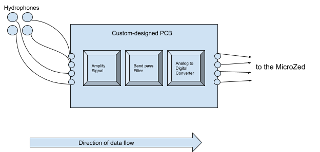

Hydrophone task and Zynq-7000¶
Note: written from the perspective of using zynq-7000 system on a chip for the purpose of direction of arrival estimation using a hydrophone array attached to an underwater submarine for the robosub competition.
What is Zynq-7000 and what is FPGA/Programmable Logic?¶
The Zynq-7000 is a system on a chip (basically means it has all the components of a typical computer, ie. CPU, memory, input/output ports) which has two main components: the Processing System (PS) block and the Programmable Logic (PL) block. The processing system is analogous to a traditional computer/notebook. What’s interesting for our use case is the Programmable Logic (PL). This is basically a piece of hardware that you can program at the level of logic gates (remember the incredible power of boolean algebra). In contrast to a CPU, this incredibly low-level of programming allows for the creation of incredibly task-specific hardware logic (by combining the logic gates and memory blocks present in the Programmable Logic). Zynq-7000 has a technical reference manual here.
Note: FPGA is just a type of programmable logic device. There are other types of hardware devices that can be programmed as well. See wiki for more info. Also look at ASIC for a different family of integrated circuit chip.
FPGA is widely used today (as of Jan 2020). In the industry, say while developing a dictation microphone (used by some doctors), companies also take a middle road via FPGA prototyping: developing their prototype hardware on FPGAs, but manufacture their final version as an ASIC so that it can no longer be modified after the design has been committed.
Then what is MicroZed?¶
Notice how the Raspberry Pi 4 Model B has a CPU that’s quad-core ARM Cortex-A72. In some sense the MicroZed is to the Zynq-7000 chip what the Raspberry Pi is to the ARM Cortex CPU. An development/evaluation board.
How do we plan to use Zynq-7000 for estimation of the direction of arrival of waves from the pinger?¶
Our submarine will have an array of 4 hydrophones (basically underwater microphones that convert pressure waves to electrical waves). These 4 hydrophones will be arranged in a manner that allows us to use the electrical waves generated at these hydrophones to calculate the direction of arrival of the waves emitted by the pinger. We’ll use a combination of ICs for
signal gain,
band-pass filtering
ADC (analog to digital conversion) (example IC link)
to first amplify the electrical signals from the hydrophones, then use a band-pass filter to remove any frequencies outside the pinger’s frequency range (robosub pingers only emit waves in the frequency range of 20khz-45khz), and then digitize the analog electrical signal by using an ADC integrated circuit chip to be passed onto the Programmable Logic block of the Zynq-7000 chip.
Figure: Block diagram of signal capture and digitization.
On the Programmable Logic (PL) block of Zynq-7000 chip we’ll use the MUSIC algorithm to process this data (now in digital format because of the ADC) and estimate the direction of arrival for the waves from the pinger. This crucial information has to be calculated fast and on calculation has to be conveyed to the main on-board computer (the Nvidia’s Xavier). After the estimation is complete, the direction of arrival will be sent to the Zynq-7000’s CPU memory. From there the CPU will read it and send it over to the main on-board computer using Ethernet.